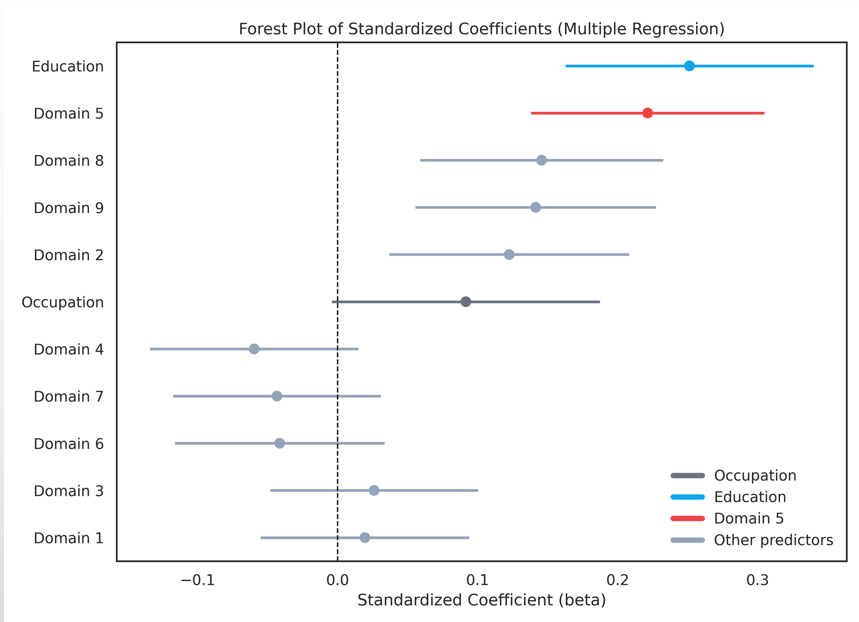

Project Overview
Antimicrobial Resistance (AMR) is a global crisis, often accelerated by misuse in Low- and Middle-Income Countries. This study focused on Baddi, Himachal Pradesh, one of Asia's largest pharmaceutical hubs. Despite being a production center, the region faces significant public health challenges including open drainage and high antibiotic residue in local rivers.
Methodology: The Ophelia Framework
We utilized the Ophelia (Optimising Health Literacy and Access) Health Literacy Questionnaire (HLQ). Unlike simple knowledge tests, this tool assesses 9 distinct dimensions of how people process health information:
Part 1: Community Results
Descriptive Statistics
The analysis revealed that Education was the single strongest predictor of AMR awareness (R² = 0.192), while Occupation contributed 9.5% variance.

Figure 1: Distribution of Education and Occupation in the study sample.
Multivariate Regression Model
We fitted a multiple linear regression model to isolate the true predictors of AMR awareness. Interestingly, while Education remained significant, Occupation lost its predictive power when controlled for literacy domains.
| Predictor | B (Coeff) | p-value | Interpretation |
|---|---|---|---|
| Education | 0.27 | <.001 ** | Strongest demographic predictor. |
| Scale 5: Critical Appraisal | 0.51 | <.001 ** | Strongest HLQ predictor. |
| Scale 8: Finding Info | 0.35 | .001 ** | Significant positive predictor. |
| Scale 9: Understanding Info | 0.34 | .001 ** | Significant positive predictor. |
| Occupation | 0.11 | .066 | Not significant in full model. |
Forest Plot Analysis
The Forest Plot below visualizes the regression coefficients, demonstrating the strong positive impact of critical health literacy domains (Scales 5, 8, and 9) on AMR knowledge compared to demographic factors.
Figure 2: Forest plot displaying the standardized coefficients of predictors for AMR Awareness.
Part 2: Pharmacist Prescribing
Using a simulated patient approach (Mystery Shopper), we audited 239 pharmacies. The results showed a dangerous over-reliance on antibiotics for viral conditions.
Heatmap of Dispensing Patterns
The heatmap below correlates illness type with medicine categories. Note the intense red block for Antibiotics in Diarrheal cases (56% Ofloxacin use), disregarding WHO guidelines for ORS/Zinc.

Figure 3: Heatmap showing high antibiotic dispensing for Diarrhea and Respiratory cases.
Antibiotic Classes & WHO AWaRe Classification
Pharmacists heavily favored Fluoroquinolones (36.9%) over safer alternatives. When mapped to the WHO AWaRe classification, 65.2% of all dispensed antibiotics were "Watch" category drugs (high resistance potential).

Figure 4: Dominance of Fluoroquinolones (Watch category) in pharmacist recommendations.

Figure 5: High prevalence of "Watch" category antibiotics (Red) vs "Access" category (Blue).
Conclusion & Impact
This study demonstrates that AMR is not just a biological challenge but a social one. Low health literacy—specifically the inability to appraise information (Domain 5)—drives demand for quick fixes. Pharmacists meet this demand with powerful, inappropriate antibiotics to retain customers.
Key Recommendation: Interventions must move beyond general awareness to target specific appraisal skills and enforce strict dispensing regulations in industrial hubs.